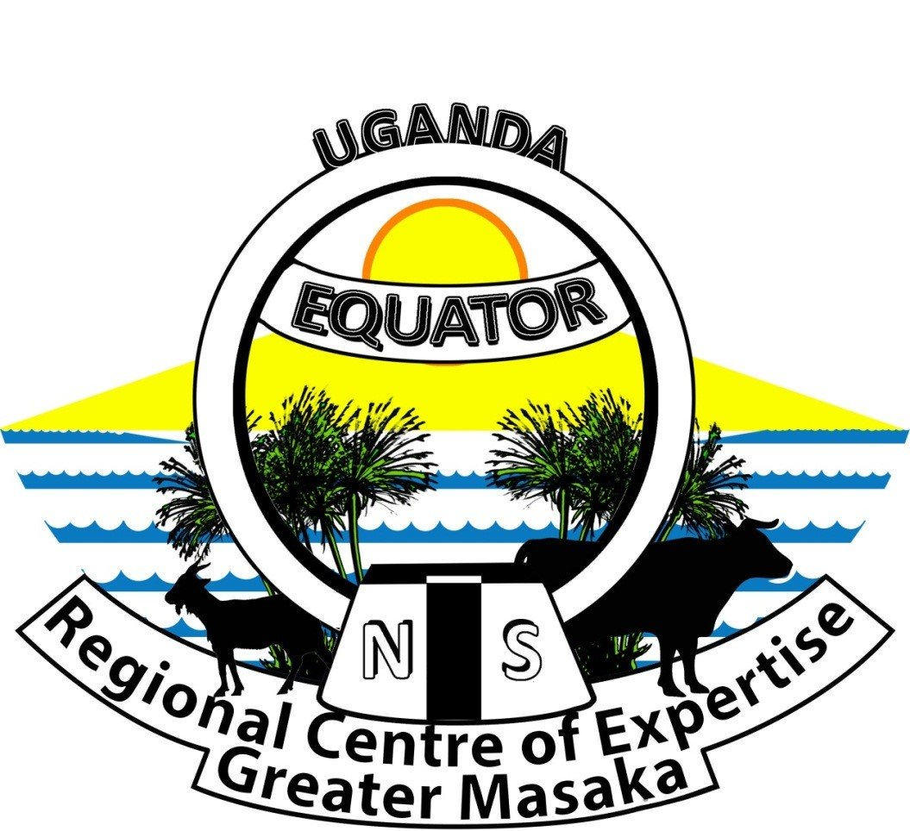

RCE Greater Masaka functions as an inclusive cooperative network. By linking higher learning institutions, grassroots community groups, civic schools, and environmental organizations, we effectively combine academic insights with local actions.